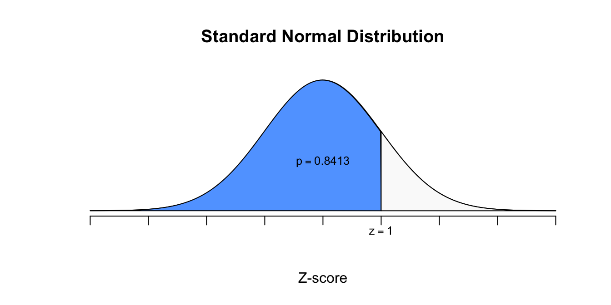
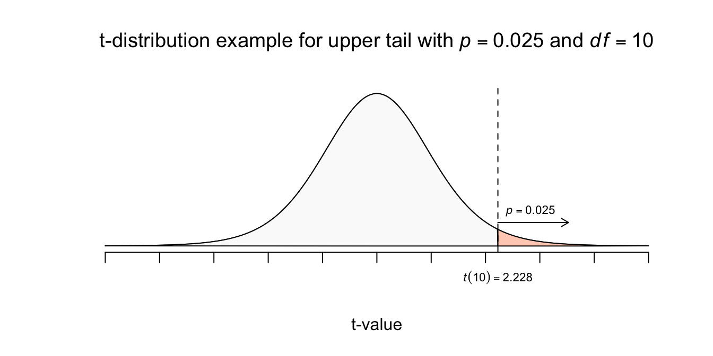
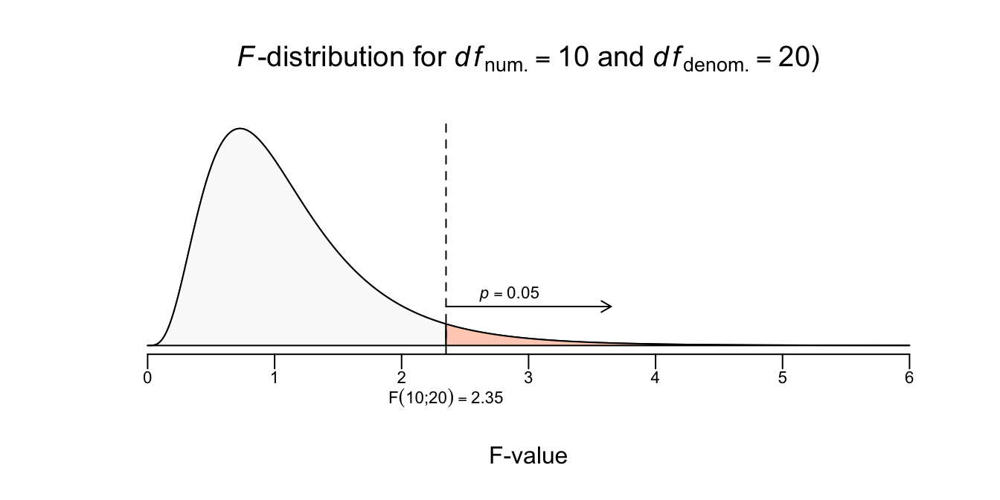
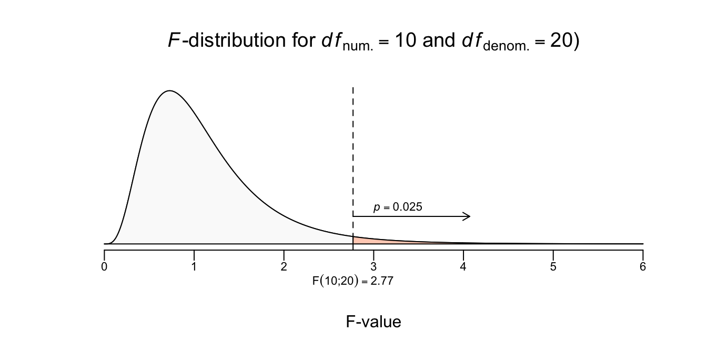
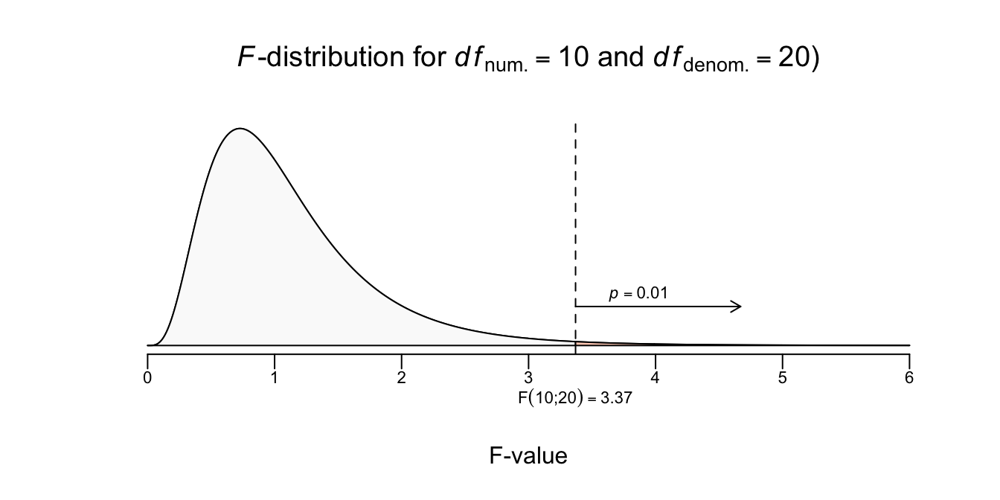

Appendix
6.1 Standaard Normaalverdeling, \(z\)-tabel

| \(Z\) | 0.00 | 0.01 | 0.02 | 0.03 | 0.04 | 0.05 | 0.06 | 0.07 | 0.08 | 0.09 |
|---|---|---|---|---|---|---|---|---|---|---|
| 0.0 | 0.5000 | 0.5040 | 0.5080 | 0.5120 | 0.5160 | 0.5199 | 0.5239 | 0.5279 | 0.5319 | 0.5359 |
| 0.1 | 0.5398 | 0.5438 | 0.5478 | 0.5517 | 0.5557 | 0.5596 | 0.5636 | 0.5675 | 0.5714 | 0.5753 |
| 0.2 | 0.5793 | 0.5832 | 0.5871 | 0.5910 | 0.5948 | 0.5987 | 0.6026 | 0.6064 | 0.6103 | 0.6141 |
| 0.3 | 0.6179 | 0.6217 | 0.6255 | 0.6293 | 0.6331 | 0.6368 | 0.6406 | 0.6443 | 0.6480 | 0.6517 |
| 0.4 | 0.6554 | 0.6591 | 0.6628 | 0.6664 | 0.6700 | 0.6736 | 0.6772 | 0.6808 | 0.6844 | 0.6879 |
| 0.5 | 0.6915 | 0.6950 | 0.6985 | 0.7019 | 0.7054 | 0.7088 | 0.7123 | 0.7157 | 0.7190 | 0.7224 |
| 0.6 | 0.7257 | 0.7291 | 0.7324 | 0.7357 | 0.7389 | 0.7422 | 0.7454 | 0.7486 | 0.7517 | 0.7549 |
| 0.7 | 0.7580 | 0.7611 | 0.7642 | 0.7673 | 0.7704 | 0.7734 | 0.7764 | 0.7794 | 0.7823 | 0.7852 |
| 0.8 | 0.7881 | 0.7910 | 0.7939 | 0.7967 | 0.7995 | 0.8023 | 0.8051 | 0.8078 | 0.8106 | 0.8133 |
| 0.9 | 0.8159 | 0.8186 | 0.8212 | 0.8238 | 0.8264 | 0.8289 | 0.8315 | 0.8340 | 0.8365 | 0.8389 |
| 1.0 | 0.8413 | 0.8438 | 0.8461 | 0.8485 | 0.8508 | 0.8531 | 0.8554 | 0.8577 | 0.8599 | 0.8621 |
| 1.1 | 0.8643 | 0.8665 | 0.8686 | 0.8708 | 0.8729 | 0.8749 | 0.8770 | 0.8790 | 0.8810 | 0.8830 |
| 1.2 | 0.8849 | 0.8869 | 0.8888 | 0.8907 | 0.8925 | 0.8944 | 0.8962 | 0.8980 | 0.8997 | 0.9015 |
| 1.3 | 0.9032 | 0.9049 | 0.9066 | 0.9082 | 0.9099 | 0.9115 | 0.9131 | 0.9147 | 0.9162 | 0.9177 |
| 1.4 | 0.9192 | 0.9207 | 0.9222 | 0.9236 | 0.9251 | 0.9265 | 0.9279 | 0.9292 | 0.9306 | 0.9319 |
| 1.5 | 0.9332 | 0.9345 | 0.9357 | 0.9370 | 0.9382 | 0.9394 | 0.9406 | 0.9418 | 0.9429 | 0.9441 |
| 1.6 | 0.9452 | 0.9463 | 0.9474 | 0.9484 | 0.9495 | 0.9505 | 0.9515 | 0.9525 | 0.9535 | 0.9545 |
| 1.7 | 0.9554 | 0.9564 | 0.9573 | 0.9582 | 0.9591 | 0.9599 | 0.9608 | 0.9616 | 0.9625 | 0.9633 |
| 1.8 | 0.9641 | 0.9649 | 0.9656 | 0.9664 | 0.9671 | 0.9678 | 0.9686 | 0.9693 | 0.9699 | 0.9706 |
| 1.9 | 0.9713 | 0.9719 | 0.9726 | 0.9732 | 0.9738 | 0.9744 | 0.9750 | 0.9756 | 0.9761 | 0.9767 |
| 2.0 | 0.9772 | 0.9778 | 0.9783 | 0.9788 | 0.9793 | 0.9798 | 0.9803 | 0.9808 | 0.9812 | 0.9817 |
| 2.1 | 0.9821 | 0.9826 | 0.9830 | 0.9834 | 0.9838 | 0.9842 | 0.9846 | 0.9850 | 0.9854 | 0.9857 |
| 2.2 | 0.9861 | 0.9864 | 0.9868 | 0.9871 | 0.9875 | 0.9878 | 0.9881 | 0.9884 | 0.9887 | 0.9890 |
| 2.3 | 0.9893 | 0.9896 | 0.9898 | 0.9901 | 0.9904 | 0.9906 | 0.9909 | 0.9911 | 0.9913 | 0.9916 |
| 2.4 | 0.9918 | 0.9920 | 0.9922 | 0.9925 | 0.9927 | 0.9929 | 0.9931 | 0.9932 | 0.9934 | 0.9936 |
| 2.5 | 0.9938 | 0.9940 | 0.9941 | 0.9943 | 0.9945 | 0.9946 | 0.9948 | 0.9949 | 0.9951 | 0.9952 |
| 2.6 | 0.9953 | 0.9955 | 0.9956 | 0.9957 | 0.9959 | 0.9960 | 0.9961 | 0.9962 | 0.9963 | 0.9964 |
| 2.7 | 0.9965 | 0.9966 | 0.9967 | 0.9968 | 0.9969 | 0.9970 | 0.9971 | 0.9972 | 0.9973 | 0.9974 |
| 2.8 | 0.9974 | 0.9975 | 0.9976 | 0.9977 | 0.9977 | 0.9978 | 0.9979 | 0.9979 | 0.9980 | 0.9981 |
| 2.9 | 0.9981 | 0.9982 | 0.9982 | 0.9983 | 0.9984 | 0.9984 | 0.9985 | 0.9985 | 0.9986 | 0.9986 |
| 3.0 | 0.9987 | 0.9987 | 0.9987 | 0.9988 | 0.9988 | 0.9989 | 0.9989 | 0.9989 | 0.9990 | 0.9990 |
6.2 \(t\)-verdeling, \(t\)-tabel

| df | .25 | .20 | .15 | .10 | .05 | .025 | .02 | .01 | 0.005 | .0025 | .001 | .0005 |
|---|---|---|---|---|---|---|---|---|---|---|---|---|
| 1 | 1.000 | 1.376 | 1.963 | 3.078 | 6.314 | 12.706 | 15.895 | 31.821 | 63.657 | 127.321 | 318.309 | 636.619 |
| 2 | 0.816 | 1.061 | 1.386 | 1.886 | 2.920 | 4.303 | 4.849 | 6.965 | 9.925 | 14.089 | 22.327 | 31.599 |
| 3 | 0.765 | 0.978 | 1.250 | 1.638 | 2.353 | 3.182 | 3.482 | 4.541 | 5.841 | 7.453 | 10.215 | 12.924 |
| 4 | 0.741 | 0.941 | 1.190 | 1.533 | 2.132 | 2.776 | 2.999 | 3.747 | 4.604 | 5.598 | 7.173 | 8.610 |
| 5 | 0.727 | 0.920 | 1.156 | 1.476 | 2.015 | 2.571 | 2.757 | 3.365 | 4.032 | 4.773 | 5.893 | 6.869 |
| 6 | 0.718 | 0.906 | 1.134 | 1.440 | 1.943 | 2.447 | 2.612 | 3.143 | 3.707 | 4.317 | 5.208 | 5.959 |
| 7 | 0.711 | 0.896 | 1.119 | 1.415 | 1.895 | 2.365 | 2.517 | 2.998 | 3.499 | 4.029 | 4.785 | 5.408 |
| 8 | 0.706 | 0.889 | 1.108 | 1.397 | 1.860 | 2.306 | 2.449 | 2.896 | 3.355 | 3.833 | 4.501 | 5.041 |
| 9 | 0.703 | 0.883 | 1.100 | 1.383 | 1.833 | 2.262 | 2.398 | 2.821 | 3.250 | 3.690 | 4.297 | 4.781 |
| 10 | 0.700 | 0.879 | 1.093 | 1.372 | 1.812 | 2.228 | 2.359 | 2.764 | 3.169 | 3.581 | 4.144 | 4.587 |
| 11 | 0.697 | 0.876 | 1.088 | 1.363 | 1.796 | 2.201 | 2.328 | 2.718 | 3.106 | 3.497 | 4.025 | 4.437 |
| 12 | 0.695 | 0.873 | 1.083 | 1.356 | 1.782 | 2.179 | 2.303 | 2.681 | 3.055 | 3.428 | 3.930 | 4.318 |
| 13 | 0.694 | 0.870 | 1.079 | 1.350 | 1.771 | 2.160 | 2.282 | 2.650 | 3.012 | 3.372 | 3.852 | 4.221 |
| 14 | 0.692 | 0.868 | 1.076 | 1.345 | 1.761 | 2.145 | 2.264 | 2.624 | 2.977 | 3.326 | 3.787 | 4.140 |
| 15 | 0.691 | 0.866 | 1.074 | 1.341 | 1.753 | 2.131 | 2.249 | 2.602 | 2.947 | 3.286 | 3.733 | 4.073 |
| 16 | 0.690 | 0.865 | 1.071 | 1.337 | 1.746 | 2.120 | 2.235 | 2.583 | 2.921 | 3.252 | 3.686 | 4.015 |
| 17 | 0.689 | 0.863 | 1.069 | 1.333 | 1.740 | 2.110 | 2.224 | 2.567 | 2.898 | 3.222 | 3.646 | 3.965 |
| 18 | 0.688 | 0.862 | 1.067 | 1.330 | 1.734 | 2.101 | 2.214 | 2.552 | 2.878 | 3.197 | 3.610 | 3.922 |
| 19 | 0.688 | 0.861 | 1.066 | 1.328 | 1.729 | 2.093 | 2.205 | 2.539 | 2.861 | 3.174 | 3.579 | 3.883 |
| 20 | 0.687 | 0.860 | 1.064 | 1.325 | 1.725 | 2.086 | 2.197 | 2.528 | 2.845 | 3.153 | 3.552 | 3.850 |
| 21 | 0.686 | 0.859 | 1.063 | 1.323 | 1.721 | 2.080 | 2.189 | 2.518 | 2.831 | 3.135 | 3.527 | 3.819 |
| 22 | 0.686 | 0.858 | 1.061 | 1.321 | 1.717 | 2.074 | 2.183 | 2.508 | 2.819 | 3.119 | 3.505 | 3.792 |
| 23 | 0.685 | 0.858 | 1.060 | 1.319 | 1.714 | 2.069 | 2.177 | 2.500 | 2.807 | 3.104 | 3.485 | 3.768 |
| 24 | 0.685 | 0.857 | 1.059 | 1.318 | 1.711 | 2.064 | 2.172 | 2.492 | 2.797 | 3.091 | 3.467 | 3.745 |
| 25 | 0.684 | 0.856 | 1.058 | 1.316 | 1.708 | 2.060 | 2.167 | 2.485 | 2.787 | 3.078 | 3.450 | 3.725 |
| 26 | 0.684 | 0.856 | 1.058 | 1.315 | 1.706 | 2.056 | 2.162 | 2.479 | 2.779 | 3.067 | 3.435 | 3.707 |
| 27 | 0.684 | 0.855 | 1.057 | 1.314 | 1.703 | 2.052 | 2.158 | 2.473 | 2.771 | 3.057 | 3.421 | 3.690 |
| 28 | 0.683 | 0.855 | 1.056 | 1.313 | 1.701 | 2.048 | 2.154 | 2.467 | 2.763 | 3.047 | 3.408 | 3.674 |
| 29 | 0.683 | 0.854 | 1.055 | 1.311 | 1.699 | 2.045 | 2.150 | 2.462 | 2.756 | 3.038 | 3.396 | 3.659 |
| 30 | 0.683 | 0.854 | 1.055 | 1.310 | 1.697 | 2.042 | 2.147 | 2.457 | 2.750 | 3.030 | 3.385 | 3.646 |
| 40 | 0.681 | 0.851 | 1.050 | 1.303 | 1.684 | 2.021 | 2.123 | 2.423 | 2.704 | 2.971 | 3.307 | 3.551 |
| 50 | 0.679 | 0.849 | 1.047 | 1.299 | 1.676 | 2.009 | 2.109 | 2.403 | 2.678 | 2.937 | 3.261 | 3.496 |
| 60 | 0.679 | 0.848 | 1.045 | 1.296 | 1.671 | 2.000 | 2.099 | 2.390 | 2.660 | 2.915 | 3.232 | 3.460 |
| 80 | 0.678 | 0.846 | 1.043 | 1.292 | 1.664 | 1.990 | 2.088 | 2.374 | 2.639 | 2.887 | 3.195 | 3.416 |
| 100 | 0.677 | 0.845 | 1.042 | 1.290 | 1.660 | 1.984 | 2.081 | 2.364 | 2.626 | 2.871 | 3.174 | 3.390 |
| 1000 | 0.675 | 0.842 | 1.037 | 1.282 | 1.646 | 1.962 | 2.056 | 2.330 | 2.581 | 2.813 | 3.098 | 3.300 |
| \(z^{*}\) | 0.674 | 0.842 | 1.036 | 1.282 | 1.645 | 1.960 | 2.054 | 2.326 | 2.576 | 2.807 | 3.090 | 3.291 |
6.3 \(F\)-verdeling, \(F\)-tabel
6.3.1 \(F\)-verdeling, \(F\)-tabel, voor \(\alpha = .05\)

| df | 1 | 2 | 3 | 4 | 5 | 6 | 7 | 8 | 9 | 10 | 20 | 30 | 40 | 50 |
|---|---|---|---|---|---|---|---|---|---|---|---|---|---|---|
| 1 | 161.45 | 199.50 | 215.71 | 224.58 | 230.16 | 233.99 | 236.77 | 238.88 | 240.54 | 241.88 | 248.01 | 250.10 | 251.14 | 251.77 |
| 2 | 18.51 | 19.00 | 19.16 | 19.25 | 19.30 | 19.33 | 19.35 | 19.37 | 19.38 | 19.40 | 19.45 | 19.46 | 19.47 | 19.48 |
| 3 | 10.13 | 9.55 | 9.28 | 9.12 | 9.01 | 8.94 | 8.89 | 8.85 | 8.81 | 8.79 | 8.66 | 8.62 | 8.59 | 8.58 |
| 4 | 7.71 | 6.94 | 6.59 | 6.39 | 6.26 | 6.16 | 6.09 | 6.04 | 6.00 | 5.96 | 5.80 | 5.75 | 5.72 | 5.70 |
| 5 | 6.61 | 5.79 | 5.41 | 5.19 | 5.05 | 4.95 | 4.88 | 4.82 | 4.77 | 4.74 | 4.56 | 4.50 | 4.46 | 4.44 |
| 6 | 5.99 | 5.14 | 4.76 | 4.53 | 4.39 | 4.28 | 4.21 | 4.15 | 4.10 | 4.06 | 3.87 | 3.81 | 3.77 | 3.75 |
| 7 | 5.59 | 4.74 | 4.35 | 4.12 | 3.97 | 3.87 | 3.79 | 3.73 | 3.68 | 3.64 | 3.44 | 3.38 | 3.34 | 3.32 |
| 8 | 5.32 | 4.46 | 4.07 | 3.84 | 3.69 | 3.58 | 3.50 | 3.44 | 3.39 | 3.35 | 3.15 | 3.08 | 3.04 | 3.02 |
| 9 | 5.12 | 4.26 | 3.86 | 3.63 | 3.48 | 3.37 | 3.29 | 3.23 | 3.18 | 3.14 | 2.94 | 2.86 | 2.83 | 2.80 |
| 10 | 4.96 | 4.10 | 3.71 | 3.48 | 3.33 | 3.22 | 3.14 | 3.07 | 3.02 | 2.98 | 2.77 | 2.70 | 2.66 | 2.64 |
| 12 | 4.75 | 3.89 | 3.49 | 3.26 | 3.11 | 3.00 | 2.91 | 2.85 | 2.80 | 2.75 | 2.54 | 2.47 | 2.43 | 2.40 |
| 15 | 4.54 | 3.68 | 3.29 | 3.06 | 2.90 | 2.79 | 2.71 | 2.64 | 2.59 | 2.54 | 2.33 | 2.25 | 2.20 | 2.18 |
| 20 | 4.35 | 3.49 | 3.10 | 2.87 | 2.71 | 2.60 | 2.51 | 2.45 | 2.39 | 2.35 | 2.12 | 2.04 | 1.99 | 1.97 |
| 30 | 4.17 | 3.32 | 2.92 | 2.69 | 2.53 | 2.42 | 2.33 | 2.27 | 2.21 | 2.16 | 1.93 | 1.84 | 1.79 | 1.76 |
| 40 | 4.08 | 3.23 | 2.84 | 2.61 | 2.45 | 2.34 | 2.25 | 2.18 | 2.12 | 2.08 | 1.84 | 1.74 | 1.69 | 1.66 |
| 50 | 4.03 | 3.18 | 2.79 | 2.56 | 2.40 | 2.29 | 2.20 | 2.13 | 2.07 | 2.03 | 1.78 | 1.69 | 1.63 | 1.60 |
| 60 | 4.00 | 3.15 | 2.76 | 2.53 | 2.37 | 2.25 | 2.17 | 2.10 | 2.04 | 1.99 | 1.75 | 1.65 | 1.59 | 1.56 |
| 120 | 3.92 | 3.07 | 2.68 | 2.45 | 2.29 | 2.18 | 2.09 | 2.02 | 1.96 | 1.91 | 1.66 | 1.55 | 1.50 | 1.46 |
| 200 | 3.89 | 3.04 | 2.65 | 2.42 | 2.26 | 2.14 | 2.06 | 1.98 | 1.93 | 1.88 | 1.62 | 1.52 | 1.46 | 1.41 |
6.3.2 \(F\)-verdeling, \(F\)-tabel, voor \(\alpha = .025\)

| df | 1 | 2 | 3 | 4 | 5 | 6 | 7 | 8 | 9 | 10 | 20 | 30 | 40 | 50 |
|---|---|---|---|---|---|---|---|---|---|---|---|---|---|---|
| 1 | 647.79 | 799.50 | 864.16 | 899.58 | 921.85 | 937.11 | 948.22 | 956.66 | 963.28 | 968.63 | 993.10 | 1001.41 | 1005.60 | 1008.12 |
| 2 | 38.51 | 39.00 | 39.17 | 39.25 | 39.30 | 39.33 | 39.36 | 39.37 | 39.39 | 39.40 | 39.45 | 39.46 | 39.47 | 39.48 |
| 3 | 17.44 | 16.04 | 15.44 | 15.10 | 14.88 | 14.73 | 14.62 | 14.54 | 14.47 | 14.42 | 14.17 | 14.08 | 14.04 | 14.01 |
| 4 | 12.22 | 10.65 | 9.98 | 9.60 | 9.36 | 9.20 | 9.07 | 8.98 | 8.90 | 8.84 | 8.56 | 8.46 | 8.41 | 8.38 |
| 5 | 10.01 | 8.43 | 7.76 | 7.39 | 7.15 | 6.98 | 6.85 | 6.76 | 6.68 | 6.62 | 6.33 | 6.23 | 6.18 | 6.14 |
| 6 | 8.81 | 7.26 | 6.60 | 6.23 | 5.99 | 5.82 | 5.70 | 5.60 | 5.52 | 5.46 | 5.17 | 5.07 | 5.01 | 4.98 |
| 7 | 8.07 | 6.54 | 5.89 | 5.52 | 5.29 | 5.12 | 4.99 | 4.90 | 4.82 | 4.76 | 4.47 | 4.36 | 4.31 | 4.28 |
| 8 | 7.57 | 6.06 | 5.42 | 5.05 | 4.82 | 4.65 | 4.53 | 4.43 | 4.36 | 4.30 | 4.00 | 3.89 | 3.84 | 3.81 |
| 9 | 7.21 | 5.71 | 5.08 | 4.72 | 4.48 | 4.32 | 4.20 | 4.10 | 4.03 | 3.96 | 3.67 | 3.56 | 3.51 | 3.47 |
| 10 | 6.94 | 5.46 | 4.83 | 4.47 | 4.24 | 4.07 | 3.95 | 3.85 | 3.78 | 3.72 | 3.42 | 3.31 | 3.26 | 3.22 |
| 12 | 6.55 | 5.10 | 4.47 | 4.12 | 3.89 | 3.73 | 3.61 | 3.51 | 3.44 | 3.37 | 3.07 | 2.96 | 2.91 | 2.87 |
| 15 | 6.20 | 4.77 | 4.15 | 3.80 | 3.58 | 3.41 | 3.29 | 3.20 | 3.12 | 3.06 | 2.76 | 2.64 | 2.59 | 2.55 |
| 20 | 5.87 | 4.46 | 3.86 | 3.51 | 3.29 | 3.13 | 3.01 | 2.91 | 2.84 | 2.77 | 2.46 | 2.35 | 2.29 | 2.25 |
| 30 | 5.57 | 4.18 | 3.59 | 3.25 | 3.03 | 2.87 | 2.75 | 2.65 | 2.57 | 2.51 | 2.20 | 2.07 | 2.01 | 1.97 |
| 40 | 5.42 | 4.05 | 3.46 | 3.13 | 2.90 | 2.74 | 2.62 | 2.53 | 2.45 | 2.39 | 2.07 | 1.94 | 1.88 | 1.83 |
| 50 | 5.34 | 3.97 | 3.39 | 3.05 | 2.83 | 2.67 | 2.55 | 2.46 | 2.38 | 2.32 | 1.99 | 1.87 | 1.80 | 1.75 |
| 60 | 5.29 | 3.93 | 3.34 | 3.01 | 2.79 | 2.63 | 2.51 | 2.41 | 2.33 | 2.27 | 1.94 | 1.82 | 1.74 | 1.70 |
| 120 | 5.15 | 3.80 | 3.23 | 2.89 | 2.67 | 2.52 | 2.39 | 2.30 | 2.22 | 2.16 | 1.82 | 1.69 | 1.61 | 1.56 |
| 200 | 5.10 | 3.76 | 3.18 | 2.85 | 2.63 | 2.47 | 2.35 | 2.26 | 2.18 | 2.11 | 1.78 | 1.64 | 1.56 | 1.51 |
6.3.3 \(F\)-verdeling, \(F\)-tabel, voor \(\alpha = .01\)

| df | 1 | 2 | 3 | 4 | 5 | 6 | 7 | 8 | 9 | 10 | 20 | 30 | 40 | 50 |
|---|---|---|---|---|---|---|---|---|---|---|---|---|---|---|
| 1 | 4052.18 | 4999.50 | 5403.35 | 5624.58 | 5763.65 | 5858.99 | 5928.36 | 5981.07 | 6022.47 | 6055.85 | 6208.73 | 6260.65 | 6286.78 | 6302.52 |
| 2 | 98.50 | 99.00 | 99.17 | 99.25 | 99.30 | 99.33 | 99.36 | 99.37 | 99.39 | 99.40 | 99.45 | 99.47 | 99.47 | 99.48 |
| 3 | 34.12 | 30.82 | 29.46 | 28.71 | 28.24 | 27.91 | 27.67 | 27.49 | 27.35 | 27.23 | 26.69 | 26.50 | 26.41 | 26.35 |
| 4 | 21.20 | 18.00 | 16.69 | 15.98 | 15.52 | 15.21 | 14.98 | 14.80 | 14.66 | 14.55 | 14.02 | 13.84 | 13.75 | 13.69 |
| 5 | 16.26 | 13.27 | 12.06 | 11.39 | 10.97 | 10.67 | 10.46 | 10.29 | 10.16 | 10.05 | 9.55 | 9.38 | 9.29 | 9.24 |
| 6 | 13.75 | 10.92 | 9.78 | 9.15 | 8.75 | 8.47 | 8.26 | 8.10 | 7.98 | 7.87 | 7.40 | 7.23 | 7.14 | 7.09 |
| 7 | 12.25 | 9.55 | 8.45 | 7.85 | 7.46 | 7.19 | 6.99 | 6.84 | 6.72 | 6.62 | 6.16 | 5.99 | 5.91 | 5.86 |
| 8 | 11.26 | 8.65 | 7.59 | 7.01 | 6.63 | 6.37 | 6.18 | 6.03 | 5.91 | 5.81 | 5.36 | 5.20 | 5.12 | 5.07 |
| 9 | 10.56 | 8.02 | 6.99 | 6.42 | 6.06 | 5.80 | 5.61 | 5.47 | 5.35 | 5.26 | 4.81 | 4.65 | 4.57 | 4.52 |
| 10 | 10.04 | 7.56 | 6.55 | 5.99 | 5.64 | 5.39 | 5.20 | 5.06 | 4.94 | 4.85 | 4.41 | 4.25 | 4.17 | 4.12 |
| 12 | 9.33 | 6.93 | 5.95 | 5.41 | 5.06 | 4.82 | 4.64 | 4.50 | 4.39 | 4.30 | 3.86 | 3.70 | 3.62 | 3.57 |
| 15 | 8.68 | 6.36 | 5.42 | 4.89 | 4.56 | 4.32 | 4.14 | 4.00 | 3.89 | 3.80 | 3.37 | 3.21 | 3.13 | 3.08 |
| 20 | 8.10 | 5.85 | 4.94 | 4.43 | 4.10 | 3.87 | 3.70 | 3.56 | 3.46 | 3.37 | 2.94 | 2.78 | 2.69 | 2.64 |
| 30 | 7.56 | 5.39 | 4.51 | 4.02 | 3.70 | 3.47 | 3.30 | 3.17 | 3.07 | 2.98 | 2.55 | 2.39 | 2.30 | 2.25 |
| 40 | 7.31 | 5.18 | 4.31 | 3.83 | 3.51 | 3.29 | 3.12 | 2.99 | 2.89 | 2.80 | 2.37 | 2.20 | 2.11 | 2.06 |
| 50 | 7.17 | 5.06 | 4.20 | 3.72 | 3.41 | 3.19 | 3.02 | 2.89 | 2.78 | 2.70 | 2.27 | 2.10 | 2.01 | 1.95 |
| 60 | 7.08 | 4.98 | 4.13 | 3.65 | 3.34 | 3.12 | 2.95 | 2.82 | 2.72 | 2.63 | 2.20 | 2.03 | 1.94 | 1.88 |
| 120 | 6.85 | 4.79 | 3.95 | 3.48 | 3.17 | 2.96 | 2.79 | 2.66 | 2.56 | 2.47 | 2.03 | 1.86 | 1.76 | 1.70 |
| 200 | 6.76 | 4.71 | 3.88 | 3.41 | 3.11 | 2.89 | 2.73 | 2.60 | 2.50 | 2.41 | 1.97 | 1.79 | 1.69 | 1.63 |